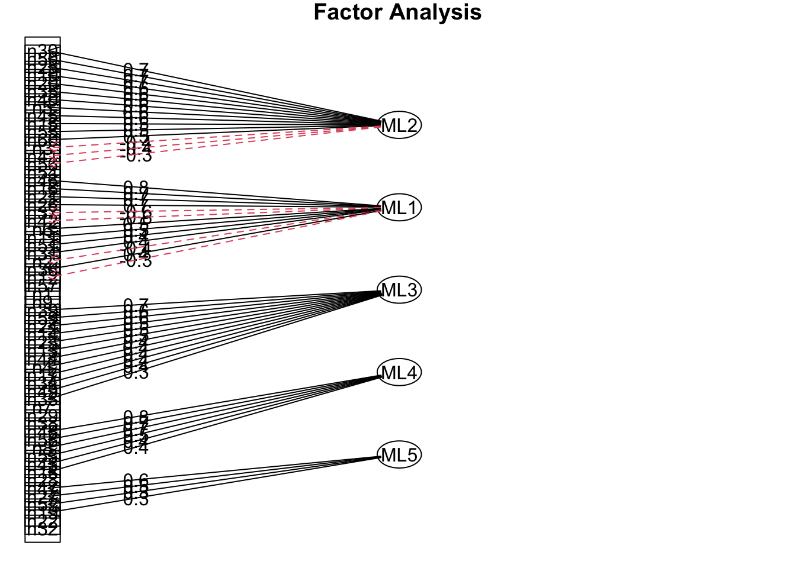

Kapitel 3 Beispiel zur Anwendung der EFA
Um die Anwendung der EFA zu verdeutlichen, betrachten wir ein Beispiel mit simulierten Daten des NEO-Fünf-Faktoren-Inventars (NEO-FFI). Das NEO-FFI ist ein weit verbreitetes psychometrisches Instrument zur Messung der fünf grundlegenden Dimensionen der Persönlichkeit: Neurotizismus, Extraversion, Offenheit für Erfahrungen, Verträglichkeit und Gewissenhaftigkeit.
In diesem Beispiel sollen die simulierten, bereits korrekt gepolten Daten explorativ untersucht werden, um zu überprüfen, ob die Daten die erwartete Fünf-Faktoren-Struktur wiederspiegeln. Das Ziel der EFA in diesem Kontext ist es, festzustellen, ob die Dimensionen des NEO-FFI durch die zugrunde liegenden Faktoren in den simulierten Daten korrekt repräsentiert werden.
Hinweis: In unserem Beispiel könnte man argumentieren, dass die CFA eine geeignetere Methode wäre, da die Fünf-Faktoren-Struktur gut etabliert erscheint. Die CFA würde dabei helfen, die Hypothese zu überprüfen, dass genau diese fünf Faktoren den Daten zugrunde liegen.
Wir wollen in diesem Fall jedoch davon ausgehen, dass die Struktur der Daten noch nicht vollständig bekannt ist. Stellen Sie sich vor, wir stehen noch vor der Entdeckung dieser Struktur: Wir haben eine Sammlung von Variablen, die möglicherweise durch zugrunde liegende Faktoren erklärt werden können, kennen jedoch weder die Anzahl noch die Natur dieser Faktoren. In einer solchen Situation ist die EFA die Methode der Wahl.
3.2 Prüfung der Anwendungsvoraussetzungen
Bevor die EFA durchgeführt wird, sollten die Daten auf ihre Eignung geprüft werden. Zu den wichtigsten Voraussetzungen zählen:
- Korrelation zwischen den Variablen: Die im Fokus stehenden Variablen müssen ausreichend miteinander korrelieren, damit latente Faktoren identifiziert werden können. Dies wird durch den Bartlett-Test überprüft.
- Kaiser-Meyer-Olkin (KMO) Test: Der KMO-Test bewertet die Eignung der Daten für die EFA. Werte über 0,5 gelten als akzeptabel, über 0,8 als gut.
Darüber hinaus sollten folgende Punkte berücksichtigt werden:
Stichprobengröße: Laut Schönbrodt und Perugini (2013) stabilisieren sich Korrelationen ab einer Stichprobengröße von etwa 250 Personen, was eine solide Grundlage für die Interpretation der Ergebnisse der EFA bietet. Eine kleinere Stichprobe könnte zu instabilen Korrelationen führen, was die Verlässlichkeit der Analyse beeinträchtigen würde. (Literatur: Schönbrodt, F. D., & Perugini, M. (2013). At what sample size do correlations stabilize?. Journal of Research in Personality, 47(5), 609-612. https://doi.org/10.1016/j.jrp.2013.05.009)
Multikollinearität: Zu starke Korrelationen zwischen den Variablen (Multikollinearität) können die Analyse verzerren. Eine Möglichkeit zur Überprüfung ist die Determinante der Korrelationsmatrix. Eine Determinante nahe 0 deutet auf problematische Multikollinearität hin und sollte vermieden werden.
# Bartlett-Test
cor_matrix_NEO = cor(NEO)
cortest.bartlett(cor_matrix_NEO, n = nrow(NEO), diag = TRUE)## $chisq
## [1] 3147.786
##
## $p.value
## [1] 0.00000000000000000000000000000000000000000000000000000000000000000000000000000002140783
##
## $df
## [1] 1770## Kaiser-Meyer-Olkin factor adequacy
## Call: KMO(r = NEO)
## Overall MSA = 0.53
## MSA for each item =
## n1 n2 n3 n4 n5 n6 n7 n8 n9 n10 n11 n12 n13 n14 n15 n16
## 0.31 0.62 0.56 0.53 0.74 0.59 0.43 0.55 0.29 0.66 0.44 0.59 0.54 0.44 0.71 0.69
## n17 n18 n19 n20 n21 n22 n23 n24 n25 n26 n27 n28 n29 n30 n31 n32
## 0.74 0.36 0.45 0.67 0.63 0.38 0.41 0.63 0.64 0.66 0.60 0.40 0.45 0.63 0.51 0.32
## n33 n34 n35 n36 n37 n38 n39 n40 n41 n42 n43 n44 n45 n46 n47 n48
## 0.54 0.38 0.56 0.42 0.57 0.37 0.62 0.61 0.58 0.62 0.42 0.49 0.57 0.70 0.34 0.61
## n49 n50 n51 n52 n53 n54 n55 n56 n57 n58 n59 n60
## 0.60 0.61 0.55 0.48 0.43 0.29 0.44 0.39 0.48 0.53 0.57 0.46## [1] 0.000000000000000005392569Die Ergebnisse zeigen, dass die Daten für die EFA geeignet sind. Der Bartlett-Test ist signifikant, was darauf hinweist, dass zwischen den Variablen ausreichende Korrelationen bestehen. Der KMO Wert liegt über der kritischen Schwelle von 0.50. Einige Variablen weisen MSA-Werte unter 0,5 auf, was auf eine geringere Eignung dieser Items hinweist. Insgesamt ist die Durchführung einer EFA jedoch gerechtfertigt, auch wenn schwächere Variablen möglicherweise überdacht oder entfernt werden sollten.
3.3 Auswahl und Begründung der Methode der Faktorenextraktion
Nachdem wir die Voraussetzungen für die EFA überprüft haben und festgestellt wurde, dass die Daten grundsätzlich geeignet sind, geht es nun um die Auswahl der richtigen Methode zur Faktorenextraktion. Diese Wahl hängt von der Zielsetzung der Analyse ab. In der EFA werden häufig die Hauptkomponentenanalyse (engl. Principal Component Analysis, PCA) und die Hauptachsenanalyse (engl. Principal Factor Analysis, PFA) verwendet.
Die PFA fokussiert sich auf die gemeinsame Varianz zwischen den Variablen und wird häufig verwendet, wenn das Ziel darin besteht, latente Faktoren zu identifizieren, die den beobachteten Variablen zugrunde liegen. Da sie die spezifische Varianz und Fehleranteile nicht berücksichtigt, ist sie besonders nützlich, wenn man an den zugrunde liegenden Strukturen interessiert ist, die die Variablen erklären. Dies ist in unserem Fall besonders relevant, da wir die latenten Persönlichkeitsfaktoren der NEO-Daten identifizieren wollen. Zur Schätzung der Faktoren verwenden wir die Maximum-Likelihood-Methode (ML), die es uns ermöglicht, robuste Schätzungen zu berechnen und zusätzlich inferenzstatistische Tests und Konfidenzintervalle für die Faktorenparameter zu erhalten.
Im Gegensatz dazu berücksichtigt die PCA sowohl die gemeinsame als auch die spezifische Varianz und wird häufig verwendet, wenn man die gesamte Varianz der Daten erklären möchte. Sie eignet sich gut zur Datenreduktion, wenn die Zielsetzung eher explorativ ist.
In dieser Analyse liegt der Fokus darauf, die zugrunde liegenden latenten Strukturen zu entdecken, die die Variablen des NEO-Tests beeinflussen. Daher ist die PFA die geeignetere Methode, da sie spezifisch darauf abzielt, nur die gemeinsame Varianz zu erklären und latente Faktoren zu extrahieren. Die Schätzung der Faktoren erfolgt hierbei mit der ML, um die bestmögliche Passung der Daten zu gewährleisten.
Zum aktuellen Zeitpunkt ist es nicht notwendig, einen spezifischen Code anzugeben, da die Faktorenextraktion in den späteren Schritten der Analyse definiert wird. Die Implementierung der PFA erfolgt im entsprechenden Codeabschnitt, sobald die praktische Analyse beginnt.
3.4 Faktorenanzahl bestimmen
Ein entscheidender Schritt in der EFA ist die Bestimmung der optimalen Anzahl der zu extrahierenden Faktoren. Diese Entscheidung hängt von mehreren Kriterien ab, die sicherstellen sollen, dass nur die wesentlichen latenten Strukturen erfasst werden, ohne unnötig viele Faktoren zu extrahieren.
Zu den gängigsten Methoden zur Bestimmung der Faktorenanzahl gehören:
Kaiser-Kriterium: Nach dem Kaiser-Kriterium werden nur die Faktoren beibehalten, deren Eigenwerte größer als 1 sind. Ein Eigenwert über 1 bedeutet, dass der Faktor mehr Varianz erklärt, als eine einzelne Variable erklären würde. Diese Methode ist einfach anzuwenden, aber sie kann dazu neigen, zu viele Faktoren zu identifizieren.
Scree-Test: Der Scree-Test visualisiert die Eigenwerte in einer absteigenden Reihenfolge in einem sogenannten “Scree-Plot”. Man sucht nach einem “Knick” in der Kurve, ab dem die Eigenwerte nur noch geringfügig sinken. Die Anzahl der Faktoren wird dann bis zu diesem Knick festgelegt. Diese Methode wird häufig verwendet, da sie die Anzahl der relevanten Faktoren grafisch verdeutlicht.
Parallelanalyse: Diese Methode vergleicht die Eigenwerte der realen Daten mit zufällig generierten Daten. Nur die Faktoren, deren Eigenwerte die der Zufallsdaten übersteigen, werden als signifikant betrachtet. Die Parallelanalyse gilt als eine der zuverlässigsten Methoden zur Bestimmung der Faktorenanzahl.
Interpretierbarkeit: Letztlich sollte die Anzahl der Faktoren auch anhand ihrer inhaltlichen und theoretischen Interpretierbarkeit festgelegt werden. Selbst wenn ein statistisches Kriterium eine bestimmte Anzahl von Faktoren vorschlägt, sollte geprüft werden, ob diese Faktoren sinnvoll interpretiert werden können.
In dieser Analyse verwenden wir eine Kombination aus dem Scree-Test und der Parallelanalyse, um die optimale Anzahl an Faktoren zu bestimmen. Dies stellt sicher, dass sowohl statistische Kriterien als auch die Interpretierbarkeit berücksichtigt werden.
# Kaiser-Kriterium: Eigenwerte über 1 extrahieren
eigenvalues = eigen(cor(NEO))$values
sum(eigenvalues > 1)## [1] 19
# Parallelanalyse: Vergleich der Eigenwerte mit Zufallsdaten
fa.parallel(NEO, fa = "fa", fm = "ml", n.iter = 1000, quant = 0.95, plot = TRUE)
## Parallel analysis suggests that the number of factors = 5 and the number of components = NADie Ergebnisse der Scree-Plot- und Parallelanalyse zeigen, dass 5 Faktoren die zugrunde liegenden Strukturen der Daten am besten erklären. Der Scree-Plot weist auf einen deutlichen Knick nach dem fünften Faktor hin, was darauf hindeutet, dass zusätzliche Faktoren keinen signifikanten Beitrag zur Erklärung der Varianz leisten. Die Parallelanalyse bestätigt diese Interpretation, da die Eigenwerte der tatsächlichen Daten bis zum fünften Faktor über den zufällig generierten Eigenwerten liegen. Dies bedeutet, dass die fünf extrahierten Faktoren die wesentlichen latenten Strukturen der Daten repräsentieren.
3.5 Auswahl und Begründung der Methode der Faktorenrotation
Nachdem die Faktorenanzahl festgelegt wurde, ist der nächste Schritt in der EFA die Rotation der extrahierten Faktoren. Die Faktorenrotation wird durchgeführt, um die interpretierbare Struktur der Faktoren zu verbessern. Dabei gibt es zwei Hauptarten der Rotation: Orthogonale und oblique Rotation.
Orthogonale Rotation: Diese Methode wird verwendet, wenn davon ausgegangen wird, dass die Faktoren unabhängig voneinander sind, also nicht miteinander korrelieren. Ein gängiges Beispiel für orthogonale Rotation ist die Varimax-Rotation. Sie maximiert die Varianz der Ladungen innerhalb der Faktoren, was dazu führt, dass die Faktorladungen extremer (also näher an 0 oder 1) werden, und die Interpretierbarkeit der Faktoren verbessert wird. Diese Methode ist geeignet, wenn man davon ausgeht, dass die extrahierten Faktoren inhaltlich getrennt und unabhängig sind.
Oblique Rotation: Diese Methode wird verwendet, wenn erwartet wird, dass die Faktoren miteinander korrelieren können. Ein Beispiel hierfür ist die Promax-Rotation. Im Gegensatz zur orthogonalen Rotation erlaubt die oblique Rotation Korrelationen zwischen den Faktoren und führt zu einer flexibleren Lösung, die in vielen psychologischen Datensätzen realistischer ist. Diese Methode ist sinnvoll, wenn man annimmt, dass die extrahierten Faktoren gemeinsame Varianz aufweisen.
In unserer Analyse ist die oblique Rotation (z. B. Oblimin) die geeignete Wahl, da es in psychologischen Daten oft realistisch ist, dass die extrahierten Faktoren (z. B. Persönlichkeitsmerkmale) miteinander korrelieren. Diese Methode bietet eine differenziertere und flexiblere Lösung, die die tatsächlichen Zusammenhänge zwischen den Faktoren besser widerspiegelt.
Zum aktuellen Zeitpunkt ist es nicht notwendig, einen spezifischen Code zur Faktorenrotation anzugeben, da diese im späteren Schritt der Analyse erfolgt. Die Rotation wird nach der Extraktion der Faktoren durchgeführt und kann im entsprechenden Codeabschnitt implementiert werden, sobald die praktische Analyse beginnt.
3.6 Interpretation der Faktorenstruktur und der Faktorladungen
Nach der Rotation der Faktoren ist es wichtig, die Faktorenstruktur und die Faktorladungen zu interpretieren. Die Faktorenstruktur zeigt auf, welche Variablen stark mit den extrahierten Faktoren korrelieren und somit durch sie erklärt werden. Die Faktorladungen geben an, wie stark jede Variable auf einen bestimmten Faktor lädt. Höhere Ladungen (in der Regel über 0.4) zeigen an, dass eine Variable stark mit einem Faktor assoziiert ist und zu dessen Interpretation beiträgt.
Faktorladungen: Die Ladungen einer Variable auf einen bestimmten Faktor werden als Korrelationskoeffizienten interpretiert, die anzeigen, wie stark diese Variable von dem Faktor beeinflusst wird. Eine hohe positive Ladung bedeutet, dass die Variable eng mit dem Faktor zusammenhängt, während eine hohe negative Ladung darauf hinweist, dass die Variable in umgekehrter Richtung zum Faktor steht.
Faktorstruktur: Die Faktorstruktur hilft dabei, jedem Faktor eine inhaltliche Bedeutung zuzuweisen. Faktoren, auf denen bestimmte Variablen hohe Ladungen aufweisen, werden oft inhaltlich so interpretiert, dass sie ein zugrundeliegendes Konzept oder eine Dimension repräsentieren (z. B. Extraversion oder Neurotizismus in einem Persönlichkeitsinventar).
In der Praxis wird für jede Variable untersucht, auf welchen Faktor sie am stärksten lädt, um die Variablen in sinnvolle Gruppen zu unterteilen. Diese Gruppen von Variablen werden dann verwendet, um den Faktor zu benennen und zu interpretieren. Wichtig ist es auch zu beachten, ob eine Variable auf mehrere Faktoren gleichzeitig lädt (sogenannte cross-loadings), was die Interpretation erschweren kann.
Nachdem wir die wichtigen Entscheidungen bezüglich der Faktorenanzahl, der Rotationsmethode und der Interpretation der Faktorladungen getroffen haben, folgt nun die praktische Umsetzung dieser Schritte in der eigentlichen Faktorenanalyse. Der folgende Code integriert die zuvor beschriebenen Methoden und Ansätze – darunter die Bestimmung der Faktorenanzahl, die Wahl der Promax-Rotation und die Extraktion der Faktoren mittels Maximum-Likelihood. Die im Code implementierte Analyse ermöglicht es uns, die Faktorenstruktur zu interpretieren und die zugrunde liegenden latenten Faktoren in den Daten zu identifizieren.
## Factor Analysis using method = ml
## Call: fa(r = NEO, nfactors = 5, rotate = "oblimin", fm = "ml")
## Standardized loadings (pattern matrix) based upon correlation matrix
## ML2 ML1 ML3 ML4 ML5 h2 u2 com
## n1 -0.08 0.22 -0.05 0.01 -0.04 0.065 0.93 1.4
## n2 -0.08 -0.36 0.25 0.06 0.33 0.359 0.64 3.0
## n3 -0.39 0.17 0.24 0.06 0.08 0.253 0.75 2.3
## n4 0.00 -0.13 0.37 -0.28 0.34 0.385 0.61 3.1
## n5 0.58 0.08 0.14 0.08 -0.27 0.436 0.56 1.6
## n6 -0.12 0.54 0.06 -0.27 0.11 0.371 0.63 1.7
## n7 0.01 -0.06 0.28 0.07 0.08 0.101 0.90 1.4
## n8 -0.19 -0.03 -0.03 0.68 -0.07 0.518 0.48 1.2
## n9 -0.07 -0.21 0.18 -0.10 -0.03 0.095 0.91 2.8
## n10 0.64 -0.16 0.00 -0.17 -0.06 0.505 0.49 1.3
## n11 0.11 0.50 0.15 -0.05 0.20 0.293 0.71 1.6
## n12 -0.01 -0.33 0.28 0.09 0.11 0.234 0.77 2.3
## n13 -0.02 0.07 0.47 0.32 0.13 0.349 0.65 2.0
## n14 0.01 -0.04 0.53 -0.04 -0.19 0.306 0.69 1.3
## n15 0.52 -0.18 -0.16 0.03 -0.12 0.355 0.65 1.6
## n16 0.07 0.74 0.11 0.22 -0.16 0.630 0.37 1.3
## n17 0.03 -0.12 0.36 0.29 0.25 0.332 0.67 3.0
## n18 -0.12 -0.16 0.14 0.37 0.07 0.206 0.79 2.0
## n19 -0.04 0.04 0.23 0.04 0.32 0.172 0.83 2.0
## n20 0.62 0.13 0.09 -0.07 0.01 0.409 0.59 1.2
## n21 0.00 0.66 -0.03 -0.11 0.11 0.446 0.55 1.1
## n22 0.03 -0.03 -0.09 -0.02 0.30 0.093 0.91 1.2
## n23 0.04 0.11 0.50 0.27 0.02 0.320 0.68 1.7
## n24 0.05 -0.13 0.60 -0.04 -0.07 0.391 0.61 1.1
## n25 0.65 -0.12 -0.07 -0.01 0.08 0.456 0.54 1.1
## n26 -0.15 0.66 0.03 -0.10 0.15 0.475 0.53 1.3
## n27 0.01 -0.30 0.22 -0.08 0.46 0.413 0.59 2.3
## n28 -0.08 -0.13 0.18 0.19 0.03 0.097 0.90 3.2
## n29 -0.17 -0.17 0.26 0.12 -0.01 0.140 0.86 3.0
## n30 0.69 -0.02 -0.01 -0.17 0.00 0.527 0.47 1.1
## n31 0.02 0.37 0.15 0.10 0.04 0.163 0.84 1.5
## n32 0.02 -0.14 -0.02 0.22 0.28 0.156 0.84 2.4
## n33 0.09 0.06 0.34 0.22 0.24 0.238 0.76 2.9
## n34 -0.08 -0.15 0.36 0.00 0.02 0.170 0.83 1.5
## n35 0.61 0.11 -0.13 0.09 0.22 0.414 0.59 1.5
## n36 -0.04 0.36 -0.16 -0.05 0.20 0.190 0.81 2.1
## n37 -0.02 -0.59 0.21 0.02 0.30 0.546 0.45 1.8
## n38 -0.01 0.10 -0.18 0.08 -0.04 0.057 0.94 2.1
## n39 -0.06 0.09 0.70 -0.22 -0.07 0.530 0.47 1.3
## n40 0.59 -0.07 0.24 0.15 0.17 0.460 0.54 1.7
## n41 -0.35 0.34 -0.14 -0.07 0.11 0.290 0.71 2.6
## n42 -0.02 -0.56 0.36 -0.03 0.02 0.481 0.52 1.7
## n43 -0.14 0.20 0.29 0.41 -0.04 0.315 0.68 2.6
## n44 -0.09 0.06 0.43 -0.19 -0.09 0.222 0.78 1.6
## n45 0.55 0.02 -0.02 -0.06 -0.09 0.325 0.68 1.1
## n46 0.00 0.79 0.15 0.08 -0.04 0.640 0.36 1.1
## n47 0.11 0.16 -0.35 0.05 0.61 0.471 0.53 1.9
## n48 -0.01 -0.01 -0.08 0.75 -0.08 0.581 0.42 1.1
## n49 -0.05 0.11 0.36 -0.16 0.30 0.266 0.73 2.6
## n50 0.67 0.06 -0.01 -0.07 0.13 0.469 0.53 1.1
## n51 -0.33 0.44 -0.12 -0.11 0.19 0.369 0.63 2.6
## n52 0.28 -0.16 0.20 -0.06 0.34 0.285 0.72 3.2
## n53 0.14 0.10 0.23 0.48 0.17 0.336 0.66 2.0
## n54 -0.21 -0.02 0.03 -0.19 0.13 0.090 0.91 2.7
## n55 0.50 0.13 0.07 -0.14 -0.43 0.509 0.49 2.3
## n56 -0.34 0.00 0.10 0.05 -0.09 0.132 0.87 1.4
## n57 0.25 -0.26 0.07 0.15 0.13 0.182 0.82 3.3
## n58 -0.06 0.01 -0.16 0.71 0.12 0.561 0.44 1.2
## n59 0.10 0.12 0.64 -0.06 0.02 0.424 0.58 1.1
## n60 0.46 0.23 -0.15 0.15 0.01 0.287 0.71 2.0
##
## ML2 ML1 ML3 ML4 ML5
## SS loadings 5.21 4.92 4.29 3.13 2.34
## Proportion Var 0.09 0.08 0.07 0.05 0.04
## Cumulative Var 0.09 0.17 0.24 0.29 0.33
## Proportion Explained 0.26 0.25 0.22 0.16 0.12
## Cumulative Proportion 0.26 0.51 0.73 0.88 1.00
##
## With factor correlations of
## ML2 ML1 ML3 ML4 ML5
## ML2 1.00 -0.07 0.03 -0.09 -0.06
## ML1 -0.07 1.00 -0.09 0.03 -0.08
## ML3 0.03 -0.09 1.00 -0.01 0.10
## ML4 -0.09 0.03 -0.01 1.00 0.04
## ML5 -0.06 -0.08 0.10 0.04 1.00
##
## Mean item complexity = 1.9
## Test of the hypothesis that 5 factors are sufficient.
##
## df null model = 1770 with the objective function = 39.76 with Chi Square = 3147.79
## df of the model are 1480 and the objective function was 24.03
##
## The root mean square of the residuals (RMSR) is 0.07
## The df corrected root mean square of the residuals is 0.08
##
## The harmonic n.obs is 101 with the empirical chi square 1754.81 with prob < 0.00000087
## The total n.obs was 101 with Likelihood Chi Square = 1822.59 with prob < 0.0000000021
##
## Tucker Lewis Index of factoring reliability = 0.671
## RMSEA index = 0.047 and the 90 % confidence intervals are 0.04 0.055
## BIC = -5007.79
## Fit based upon off diagonal values = 0.83
## Measures of factor score adequacy
## ML2 ML1 ML3 ML4 ML5
## Correlation of (regression) scores with factors 0.95 0.95 0.93 0.92 0.89
## Multiple R square of scores with factors 0.90 0.90 0.87 0.85 0.79
## Minimum correlation of possible factor scores 0.80 0.80 0.74 0.71 0.58fa_NEO = fa(NEO, nfactors = 5, rotate = "oblimin", fm = "ml")
print(fa_NEO$loadings, cut = 0.4) # Faktorladungen##
## Loadings:
## ML2 ML1 ML3 ML4 ML5
## n1
## n2
## n3
## n4
## n5 0.575
## n6 0.540
## n7
## n8 0.680
## n9
## n10 0.639
## n11 0.502
## n12
## n13 0.471
## n14 0.530
## n15 0.523
## n16 0.736
## n17
## n18
## n19
## n20 0.619
## n21 0.660
## n22
## n23 0.496
## n24 0.597
## n25 0.654
## n26 0.656
## n27 0.461
## n28
## n29
## n30 0.691
## n31
## n32
## n33
## n34
## n35 0.609
## n36
## n37 -0.588
## n38
## n39 0.698
## n40 0.589
## n41
## n42 -0.556
## n43 0.414
## n44 0.425
## n45 0.550
## n46 0.790
## n47 0.605
## n48 0.754
## n49
## n50 0.674
## n51 0.435
## n52
## n53 0.479
## n54
## n55 0.498 -0.428
## n56
## n57
## n58 0.709
## n59 0.636
## n60 0.462
##
## ML2 ML1 ML3 ML4 ML5
## SS loadings 5.170 4.847 4.216 3.110 2.270
## Proportion Var 0.086 0.081 0.070 0.052 0.038
## Cumulative Var 0.086 0.167 0.237 0.289 0.327
##
## Factor analysis with Call: fa(r = NEO, nfactors = 5, rotate = "oblimin", fm = "ml")
##
## Test of the hypothesis that 5 factors are sufficient.
## The degrees of freedom for the model is 1480 and the objective function was 24.03
## The number of observations was 101 with Chi Square = 1822.59 with prob < 0.0000000021
##
## The root mean square of the residuals (RMSA) is 0.07
## The df corrected root mean square of the residuals is 0.08
##
## Tucker Lewis Index of factoring reliability = 0.671
## RMSEA index = 0.047 and the 10 % confidence intervals are 0.04 0.055
## BIC = -5007.79
## With factor correlations of
## ML2 ML1 ML3 ML4 ML5
## ML2 1.00 -0.07 0.03 -0.09 -0.06
## ML1 -0.07 1.00 -0.09 0.03 -0.08
## ML3 0.03 -0.09 1.00 -0.01 0.10
## ML4 -0.09 0.03 -0.01 1.00 0.04
## ML5 -0.06 -0.08 0.10 0.04 1.003.6.1 Faktorenstruktur und Varianz
Die Analyse extrahiert 5 Faktoren, die zusammen 32,7 % der Varianz in den Daten erklären. Die Varianz, die jeder Faktor erklärt, ist relativ gering (zwischen 3,8 % und 8,6 %). Dies deutet darauf hin, dass die latenten Faktoren einen moderaten Teil der Varianz der beobachteten Variablen erfassen, aber auch ein beträchtlicher Anteil der Varianz unerklärt bleibt (siehe Zeile Proportion Var sowie Cumulative Proportion). Die kumulative Varianz der fünf Faktoren beträgt 32,7 %. Das ist für psychologische Daten relativ typisch, da Persönlichkeitsmerkmale oft komplex und schwer vollständig durch Faktoren zu erklären sind.
3.6.2 Faktorladungen
Die Faktorladungen zeigen an, welche Variablen stark auf die Faktoren laden (in der Regel Ladungen > 0.4).
ML1: Variablen wie n6, n11, und n16 laden hoch auf diesen Faktor (z. B. n16 mit einer Ladung von 0.736).
ML2: Variablen wie n5, n10, n15, und n20 laden stark auf diesen Faktor (z. B. n10 mit einer Ladung von 0.639). Diese Variablen hängen also stark mit diesem Faktor zusammen.
ML3: Variablen wie n13, n14, und n39 laden auf diesen Faktor.
ML4 und ML5 haben ebenfalls signifikante Ladungen, zum Beispiel lädt n48 mit einer Ladung von 0.754 auf ML4, was eine starke Korrelation mit diesem Faktor anzeigt.
Die Variablen mit den höchsten Ladungen pro Faktor sollten genauer betrachtet werden, um den inhaltlichen Zusammenhang und die Bedeutung der Faktoren zu bestimmen.
3.6.3 Modellgüte
RMSEA (Root Mean Square Error of Approximation) liegt bei 0.047, was als guter Wert gilt. Ein RMSEA-Wert unter 0.05 deutet darauf hin, dass das Modell eine gute Anpassung an die Daten aufweist. RMSR (Root Mean Square Residual) ist 0.07, was ebenfalls im akzeptablen Bereich liegt.
3.6.4 Faktorenkorrelation
Die Korrelationen zwischen den Faktoren sind relativ gering, was zeigt, dass die Faktoren weitgehend unabhängig voneinander sind. Die höchsten Korrelationen liegen bei etwa 0.10, was darauf hindeutet, dass die oblique Rotation (Oblimin) keine stark korrelierten Faktoren identifizieren konnte.
3.6.5 Fazit
Die Faktorenanalyse extrahiert 5 latente Faktoren, die zusammen 32,7 % der Varianz der NEO-Daten erklären. Die Faktorladungen zeigen eine klare Zuordnung der Variablen zu den Faktoren, wobei bestimmte Variablen stark auf einen Faktor laden und somit die Bedeutung dieser Faktoren bestimmen.Das Modell zeigt eine gute Anpassung an die Daten, was durch die niedrigen RMSEA- und RMSR-Werte unterstützt wird.
Die nächsten Schritte wären, die inhaltliche Bedeutung der Faktoren anhand der hochladenden Variablen zu interpretieren und zu überprüfen, wie gut diese Faktoren das theoretische Konstrukt der NEO-Daten widerspiegeln.